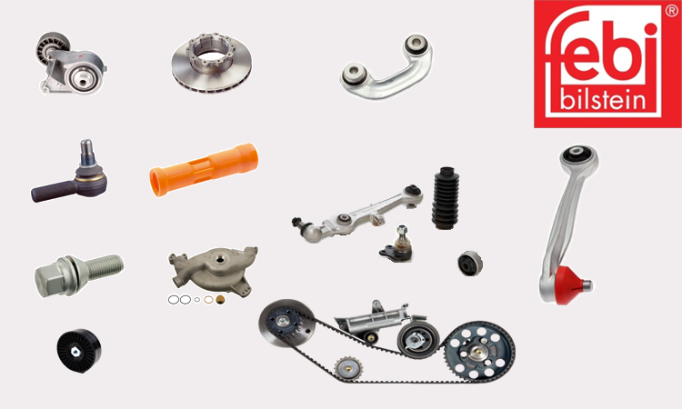

Febi bilstein je osnovan davne 1844 godine. Danas je jedan od vodećih svetskih proizvođača i dobavljača rezervnih delova za putnička i komercijalna vozila na nezavisnom tržištu rezervnih delova. Više od 170 godina održava kontinuitet, kvalitet, uslugu, pouzdanost i inovacije. Asortiman cini 30.000 razlicitih rezervnih delova. Osim toga, febi ima svoja predstavništva ili iskusnog partnera u preko 69 zemalja.
Od upravljačke, motorne i kočne tehnike, tehnike šasija i učvršćivanja točkova do autoelektrike i pneumatike i programa febi plus – kod firme febi bilstein ćete naći sve za profesionalno servisiranje - putničkih vozila, kamiona, autobusa, prikolica, poluprikolica i malih transportera svih aktuelnih marki i modela.
Febi bilstein stoji za proizvode koji ispunjavaju najviše zahteve kvaliteta izrade i bezbednosti ugradnje. Kvalitetom, brzinom i postavljanjem trendova febi bilstein vam daje odlučujući podsticaj na globalnom tržištu. Zato što kao premium marka ima obavezu da ispuni zahteve svojih kupaca – svakodnevno.
AUTOMATERIJAL d.o.o - je zastupnik koncerna Febi Bilstein i Blue Printa za zapadnu Srbiju.
